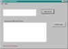

Tymeac Overall Status,
com.tymeac.client.jframe.TyOverall
This frame class displays the overall load on the system.
The non-frame version of this class is TyOverallClient, below.
 (click to link to full image)
Elements
Top List:
The two or three lines are:
The number of Synchronous
Request currently working in the system.
When the system is idle and this number is greater than zero, then there may be timed-out
requests lingering. RMI threads (the request) and Tymeac Queue Threads "share"
some persistent storage. Eventually, the Tymeac Monitor
frees this storage.
The number of Asynchronous
Requests currently working in the system. This number includes any
Asynchronous Requests cancelled but not purged. Tymeac marks cancelled
requests as purgeable but does not physically purge the request from the
system immediately. The Monitor purges those cancelled request when
next it runs.
The next line only appears when there are entries in the
Stall Array:
The number of Asynchronous Requests possibly stalled in the system.
When this number is greater than the above number of Asynchronous Requests, then there may
be "doubtful" requests lingering. Eventually,
the Tymeac Monitor frees these elements.
Bottom List: Each
line is the name of a Queue with threads of a status other than "disabled". (See
TyQueThd for the status information.) That is, the Queue
has attendant threads, that can process a request.
This List is useful during shut
down processing. After requesting shut down and when there are no more Queues
with attendant threads, the system may be shut down.
For example: An administrator
requests Tymeac shut down.
Tymeac enters stage one of shut down processing.
No new requests may enter the system.
Existing processes may continue until complete.
When non-Output Agent threads complete, they terminate.
If there are no working asynchronous requests, then the Output Agent threads terminate.
When there are working asynchronous requests, new Output
Agent Queues may schedule.
When no requests are pending (the Top List) this Bottom
List shows only the Output Agent Queues, when asynchronous request were working at the
time of the shut down.
An administrator requests Tymeac shut down, again.
Tymeac enters stage two of shut down processing.
Output Agent threads are told to terminate when they
finish processing.
When all processes complete, the Output Agent threads
terminate and this Bottom List shows that there are no more attendant threads for any
Queue.
The system is halted.
An administrator requests Tymeac shut down, again. This
completes shut down.
Buttons
REFRESH TOP: This button refreshes the top list
only.
REFRESH BOTH: This button refreshes the top list and
the bottom list.
Message Block at bottom : -- This is an information message:
Connection failure -- The RMI connection failed or the Tymeac Server returned an
invalid message.
Ok -- The request processed.
com.tymeac.client.TyOverallClient (JavaDoc)
This is the Non-GUI equivalent of the GUI Class, above. An example of how to use this
class is: com.tymeac.demo.TyDemoClient_getOverall.java in the
<TymeacHome>source/com/tymeac/demo directory.
Constructor 1 -- has no arguments. This is for the RMI Server. The constructor gets a
new instance of a Tymeac internal class that is similar to TySvrComm
Constructor 2-- is for the internal server. The single argument is the Tymeac
Server Interface, TymeacInterface.
Instance Methods --
public TyOverallObj
refreshBoth() {
Returns the TyOverallObj.
see the JavaDoc for a description thereof.
Parameters None.
public TyOverallObj
refreshTop() {
Returns the TyOverallObj.
see the JavaDoc for a description thereof.
Parameters None.
| {kind=link}